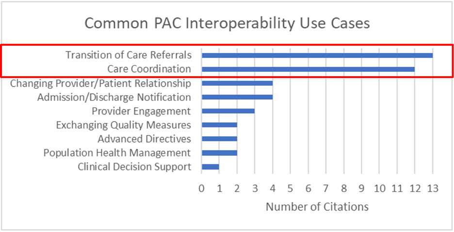
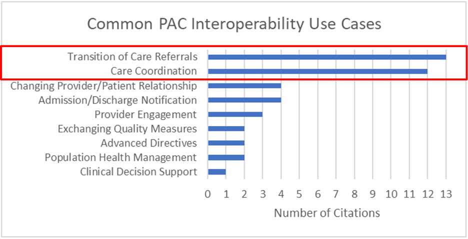
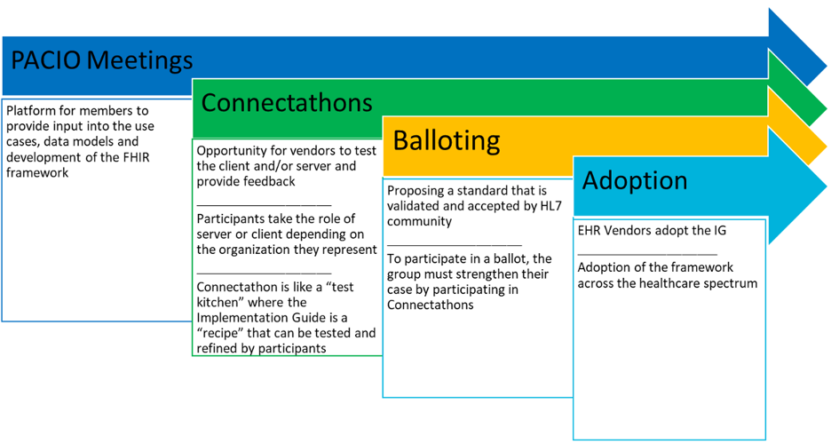
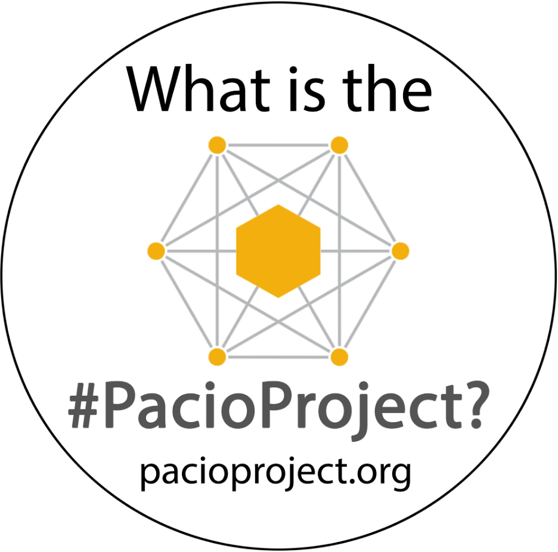
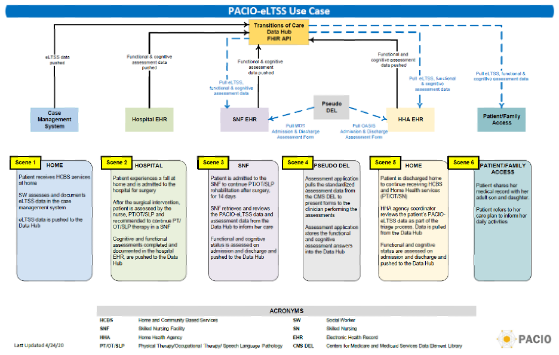
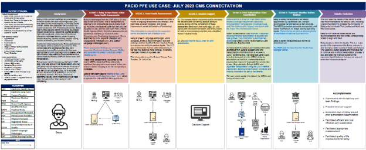
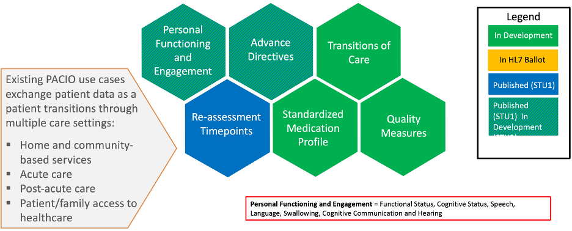

The idea behind the PACIO Project started with a simple question – “How do we get post-acute care (PAC) data to follow the patient through transitions of care?” The solution was to build a community driven to develop and drive adoption of post-acute care data exchange standards in Fast Healthcare Interoperability Resources (FHIR) for transitions of care and care coordination across healthcare.
Forty-five percent of Medicare patients leaving acute care end up in some form of post-acute care.

Post-acute care patients are some of the most complicated patients in health care, with many stops along their healthcare journey. There is often poor communication between stops leading to inadequate transitions and continuity of care that can lengthen stays, increase costs, and result in poorer outcomes. There is a heavy reliance on patient recall of information, which may not be reliable or possible, which raises provider and patient burden. Missing information may need to be tracked down or recreated through redundant procedures. Meanwhile, patients may not receive critical care right away while missing data is rebuilt.

To confirm the need for the PACIO Project, the MITRE team supporting the Centers for Medicare and Medicaid Services (CMS) Division of Chronic and Post-Acute Care (DCPAC) conducted an environmental scan through individual interviews of clinicians, technologists, and other subject matter experts to determine what is hindering interoperability of PAC data and what PAC use cases would best benefit from better data interoperability.
The results from that environmental scan are shown below and were shared and corroborated during a meeting of 75 post-acute care clinicians, vendors, and subject matter experts.
 

Armed with the environment scan information, the PACIO Project was created with the following mission, goals, and priorities.
The PACIO Project is a collaborative effort to advance interoperable health data exchange between post-acute care (PAC) and other providers, patients, and key stakeholders across health care and to promote health data exchange in collaboration with policy makers, standards organizations, and industry through a consensus-based approach.
Although the PACIO Project is not an HL7 FHIR Accelerator, it acts like one, developing multiple use cases through the same process used by FHIR Accelerators. PACIO meetings are used to determine use cases and build data models to develop FHIR Implementation Guides. Those Implementation Guides are tested at Connectathons and Test Events. When testing indicates that the Implementation Guide is ready, materials are prepared for the HL7 Ballot, which seeks validation and acceptance by the broader HL7 community. Finally and ultimately, the PACIO Project drives for vendor adoption.
In selecting the PACIO Project’s first use case, the community first look at what prior work was already available. The project did not want to reinvent the wheel and wanted instead to leverage as much existing development as possible. The process began by looking at what was available in the Health Level 7 (HL7) Clinical Document Architecture (CDA) specification.
From that list, an experienced medical doctor within the PACIO Community prioritized the list, ranking, in their view, the importance of that data (from 1 – most important to 3 – least important) for a variety of different actors: physician/nurse practitioner, registered nurse, therapist, administrator, and the patient/family. The ranking was reviewed by the greater PACIO Community and judged it accurately captured importance and priorities. Several high-priority (highlighted in yellow in the table below) and medium-priority (blue) sections were identified as high value targets for potential use cases.

Next, the PACIO Community determined which of the high and medium priority use cases candidates were already covered in FHIR and from that, identified three potential final candidates: Functional Status, Mental (or Cognitive) Status, and Advance Directives.
High Priority Use Cases:

Medium Priority Use Cases:

Since this was the PACIO Community’s first use case with many people new to the data standards development process and the desire to develop something quickly, a simpler use case was preferable. Further discussions with HL7 work groups indicated that Advance Directives, while an important use case, was very complex and not ideal as a starting use case. The community was split on Functional Status vs Mental (Cognitive) Status and the assessment framework for both were similar, so the community decided to tackle both as the initial use cases. Leveraging use cases based on assessments also allowed the inclusion of the CMS Data Element Library, which had significant value for the sponsoring CMS DCPAC team.
With the initial use cases decided, the required components and data exchanges were identified and captured in the following diagram, which guided the PACIO work for future connectathons.

In addition to the principles outlined generally in this playbook, the PACIO Project followed these additional design principles:
How many people knew they needed a modern smart phone before 2007? Most did not, but today almost everyone has a smart phone as an indispensable tool.
People often have a general sense that something might be great to have, but to actually see a tangible example helps crystalize the need or desire and foster ideas on how it can be improved.
The PACIO Project has taken this approach from its inception, focusing on developing reference implementation prototypes to help crystalize and plant seeds on what is possible. There is a real focus on getting to the demonstration as quickly as possible, to show at conferences, at connectathons, and any venue who will listen.
With any new venture or use case, it is important to show progress as quickly as possible to build excitement and momentum. To get to that point quickly, the PACIO Project focuses on scoping and prioritizing initial development as tightly as possible to show critical value inexpensively in the shortest amount of time. Key questions are:
Be forward leaning, ambitious, and push limits to motivate participants and observers. That generates excitement. Build upon what was done before.
The PACIO Community formed through networking. Everyone involved in the early stage of the project opened their contact list to identify leaders with the experience, influence, and subject matter expertise in critical areas to help kickstart the project. A letter was crafted detailing the purpose of the PACIO Project, its high-level goals and priorities, how it might operate, and included an invitation to attend a kick-off meeting to find out more. Included in the list were leaders from government, vendors, associations, clinicians, and consultants.
This effort was very successful and over 80 people attended the initial kick-off meeting in February 2019, both in person at MITRE and virtually. The kick-off meeting covered the project goals and priorities in more detail and discussed next steps, including the process for creating a Project Charter and deciding on what use cases to tackle first.
The PACIO Project Charter acts as a guiding document providing in detail:
The PACIO Project is purely a volunteer effort, so the project does not have the concept of participant tiers or a pay-to-play model. Everyone has an equal voice and all viewpoints are heard and considered.
The PACIO Project was formed to develop and build adoption of data exchange standards for post-acute data using FHIR. Early in the Charter development process, a vocal minority wanted PACIO to focus on developing standards in CDA instead of FHIR. All voices were heard and after some discussion within the PACIO leadership team, the decision was made to stick to the purpose expressed in the invitation letter and focus on FHIR-related development. That was the only time that a major project decision was made by the leadership team instead of the community and that method should be used only when absolutely necessary, as it can consume significant political capital and undermine the sense of community. In this case, it was critical for setting a consistent, focused direction for the project and clearing the way for early progress and momentum.
Otherwise, the development of the PACIO Project Charter was discussed openly and approved by community vote and has continued to be the guiding governance for the project with only minor modifications.
Deciding who owns materials generated during the project can be a sticky issue. That turned out not be the case with the PACIO Project. It is important to determine who owns what early so it is clear from the beginning and problems do not arise later. Ideally, the owning organization should be:
In the case of the PACIO Project, with the exception of the FHIR Implementation Guides that are owned by HL7, MITRE was approved as the owner of PACIO Project materials for the following reasons:
In short, taking on ownership of community-generated artifact is the great use of a Federally-Funded Research and Development Center (FFRDC).
PACIO materials are developed in the open, consistent with ANSI and HL7 standard development practices. All source code for reference implementations is freely available on GitHub through the Apache 2.0 license, a very permissible license that also protects trademarks, like the PACIO name and logo. The Apache 2.0 license allows the software to be easily integrated into derivative works with attribution while not encroaching on the licensing of the derivative software.
The Project Charter also highlighted important roles within the project and the responsibilities associated with each role, including the leadership structure for individual use cases under the project. The interview focuses on experience leading diverse groups, conflict management, and the ability to build consensus, knowledge of the domain, and if applicable, technical ability and experience building FHIR standards.
Use Case Leaders are critical to the success of the PACIO Project, so these roles must be selected carefully. Using the role definitions in the PACIO Charter as a guide, an interview process was created to determine the qualification of prospective leaders and determine their suitability for the role.
All major decisions should be voted on by the community using parliamentary procedures, as specified in the charter. This includes the establishment or changing of a strategy to complete work, approving a document for ballot or publication, approval of a new use case, etc. Votes must be recorded in the minutes and provides a record of what has been decided. If the same topic arises in a subsequent conversation, if the record of a vote exists, it can be referenced to help prevent retreading of old ground. If the someone wishes to reconsider, that can be made as a motion, seconded, and voted on by the community.
If there is any doubt whether a vote is needed for a particular decision, a motion, second, and vote should be taken.
Branding is an important aspect of any public-facing project. The best branding is memorable with a short, pronounceable name and recognizable logo and can help the project gain traction. In the case of the PACIO Project, there was much discussion and several names and logos were suggested. Ultimately, the name PACIO (Post-Acute Care InterOperability - pronounced “passeo”) was selected.
The selected logo displays a series of nodes (healthcare facilities) networked with a large central node, the patient, in the center, highlighting the importance of patient-centered care.
This logo and name were approved by the PACIO Community and are used in all PACIO materials to help establish the branding for the project.
Not all initial participants at the kick-off meeting continue to stay involved, as some decide the project does not align with their interests or the time requirement is too much to actively contribute at that time. To provide a way for the latter group to stay involved in PACIO Project and keep up with its progress, a monthly half-hour PACIO “Observers” meeting series was created to provide a summary of project updates. This meeting can serve as an effective recruiting tool as some “Observers” become weekly “Contributors”.
There are many ways participants can contribute to the PACIO Project. Participants who want to contribute to the PACIO Project can start by joining the weekly Contributors Meeting. The Contributors Meeting is where quick use case updates, key discussions, and final PACIO Community votes take place. Specific use case topics can also be discussed during this meeting, but as the project has grown, each use case typically has a meeting series to dive deeply into the data modeling and standard development process specific to that use case. Participants can choose which of those use case meetings they wish to join if they want to contribute at that level.
The PACIO Project also presents at several conferences every year to spread awareness of the project and its objectives. To socialize the project and brand, PACIO buttons were printed and worn at conferences to invite discussion and further participation.
The PACIO Project also maintains a YouTube channel featuring overviews on topics and recorded demonstrations from connectathons and other events.
A large part of the PACIO Project is educating the community on the healthcare standardization process to build and enable leaders to scale the work more broadly. As a result, the PACIO Project has been able to address more use cases with greater delegation.
Clinician expertise is vital for determining what information is needed in a post-acute care setting, but the PACIO Project has found that the community is far more effective if there is a high-level general understanding of how data elements are specified in a standard. It is very helpful for the community to understand the differences between optional, must support, and required elements, terminologies, and the potential impacts on the FHIR Implementation Guide. Not everyone in the community needs to be an expert on these topics, but it has helped greatly in getting the community to understand and reach consensus as quickly as possible.
Progress happens at the speed of consensus.
The community appreciates the education the PACIO Project has provided and has opened new horizons for community members, to a point where they have invited others to join PACIO.
The PACIO Project strives to listen to every point of view and treat everyone with respect. There are no dumb ideas or questions. This provides a comfortable environment for people who bring their unique perspectives to voice their opinions and ask key questions, which produces great discussions and conclusions on challenging topics.
The PACIO Project has invited numerous guest subject matter experts to speak on topics or related project or research that can inform the development of PACIO standards, raise awareness, and uncover collaboration opportunities. Several of these sessions have been critical to the development of the PACIO Project’s Implementation Guides and the community grows its knowledge during every visit.
The PACIO Community is made up of very busy people who donate their time to help solve problems. There are many alternative ways they can spend their time and it is important that the PACIO Project, even as a volunteer organization, lives up to its commitments and shows meaningful progress to provide value for their time. Many long-time community members appreciate this focus and that helps draw new members into the community because they see things getting done.
Hitting deadlines and fulfilling commitments also raises the reputation of the project within the broader healthcare community. The PACIO Project has had success building a positive reputation.
Getting together at conferences and gatherings is great for building relationships, morale, and bonds within the community, particularly through topics and venues outside of the PACIO work itself. Have dinner, see a ballgame, visit a museum.
The PACIO Project records its meetings and places meeting materials on its HL7 Confluence site. This not only acts as a record for reference, but it also helps new and potential participants get up to speed quickly on what the project has been doing and where we are in the various work streams.
To adhere to the design principles detailed above, the PACIO Project built a demonstration that quickly provided a minimal set of functionalities showing tangible value and what was possible using the CMS Data Element Library (DEL). The CMS DEL is a web-based library containing the assessments CMS requires PAC providers to submit during a patient’s stay at a PAC facility, for example, at admission and discharge. The PACIO Project’s initial focus was to demonstrate how the CMS DEL assessment metadata could be represented in FHIR to display forms in an application and collect responses.
This involved several key steps in preparation for the PACIO Project’s first HL7 connectathon in September 2019:
The September 2019 HL7 connectation was a success and gave the PACIO Project a great platform to build from for the next HL7 connectathon in January 2020. With the development of the Functional Status and Cognitive Status FHIR Implementation Guides, the PACIO Project sought to demonstrate what could be done with the assessment data once it was collected. By pushing the envelope, we expanded the September connectathon work into a multi-scene demonstration, showing how assessment data can not only be collected, but shared across multiple acute and PAC facilities. The January 2020 connectathon work also incorporated other FHIR IGs developed by other projects to test and show that independent FHIR IGs can work together effectively as a system of systems.

Over time, PACIO connectathon tracks have grown to demonstrate FHIR data exchanges across up to 23 different systems using up to 17 different FHIR implementation guides by 14 different vendors and organizations. Beyond PACIO, the implementation guides include those developed by the Gravity, Da Vinci, CARIN Alliance, and FHIR-At-Scale Taskforce (FAST) FHIR Accelerators, as well as other independent projects and core FHIR Specifications.

The PACIO Project approaches connectathons differently than most other projects and organizations. Most projects develop the necessary FHIR Implementation Guides for the track and provide other materials including a reference implementation, but the actual connecting does not start until the actual connectathon. The PACIO Project does all of that but recruits a core set of participants weeks in advance and works to have a fully functional demonstration with those participants the week before the connectathon. The actual connectathon is used to fine tune the demonstration and resolve any issues before recording the full demonstration. Starting the connecting process ahead of time allows the PACIO Project to test more complicated cross-project data interactions. Unexpected participants are still welcome and always add further value to the connectathon, but they integrate with participants who are already connecting, making it easier for them to participate.
Sometimes, the HL7 and CMS Connectathons do not line up timing-wise with project requirements. In those cases, the PACIO Project conducts its own testing events. Project management at HL7 allows testing outside of connectathons as long as the outcomes are recorded (similar to what is collected at the end of a connectathon) and any issues raised are captured in the HL7 Jira issue tracking system.
When conducting testing events, the PACIO Projects makes every effort to match what is done during the life cycle of a connectathon track, namely:
Over time, the PACIO Project has published five FHIR Implementation Guides, with two more moving towards first edition HL7 ballot and two more being updated for second edition HL7 ballot. The PACIO Project has also been an active member of the USCDI and USCDI+ development, providing many comments each year as the USCDI and USCDI+ version progress, resulting in several new published data classes and data elements, such as Advance Directives, Functional Status, Mental/Cognitive Status, and Patient Communication Status.
USCDI updates inform FHIR US Core development and new regulations are requiring newer US Core versions for certified APIs, that can mandate support for these new data elements. The PACIO Project’s development and testing of relevant FHIR Implementation Guides through vendors in the PACIO Community brings additional credibility to the PACIO comments.
The PACIO Project is well regarded by CMS, Office of the National Coordinator (ONC), and HL7 with multiple references in the Federal Register, ONC Interoperability Standards Advisory (ISA), trade journals, and both domestic and international FHIR interoperability specification lists. The PACIO Project is considered by many to be the go-to source for PAC subject matter expertise and standards development.
The PACIO Project continues to attract new members from new sources, validating the project’s strategy of presenting and participating in a broadening list of conferences and use cases. The PACIO Advance Directives work has visibility at the highest levels of the FHIR Project Team who have taken a personal interest in the project.
Pilots and production opportunities are also being pursued by the PACIO Project. This has been more challenging than in other cases since post-acute care facilities were not included in the Electronic Health Record (EHR) Incentive Program and therefore did not receive funding to install and upgrade their EHR systems like other parts of healthcare. As a result, the number of available participants in pilots and production environments is much more limited. Nevertheless, the PACIO Project is forging a pathway forward for standardized data exchange for post-acute care.